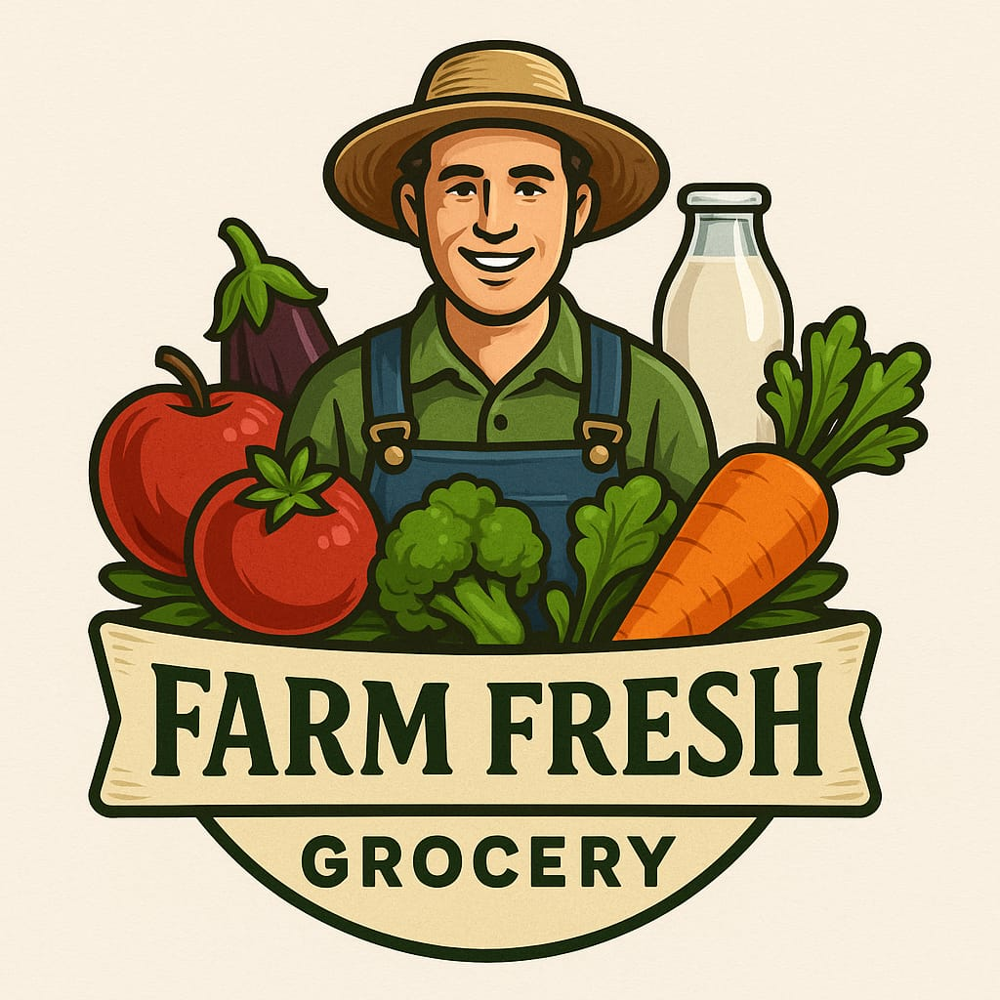

🌱 About Farm Fresh Grocery 🌱


Farm Fresh Grocery was founded with one simple mission – to bring fresh, organic, and locally-sourced food directly to your doorstep. We believe in supporting local farmers and empowering communities by making healthy, high-quality produce accessible to everyone.
Our team works hand-in-hand with farmers to ensure the freshest fruits, vegetables, dairy, and pantry staples are delivered right to your home. By choosing us, you're not only enjoying premium groceries but also contributing to a healthier planet and a stronger local economy.
Experience the joy of farm-to-table shopping with us, and taste the difference of truly fresh groceries.